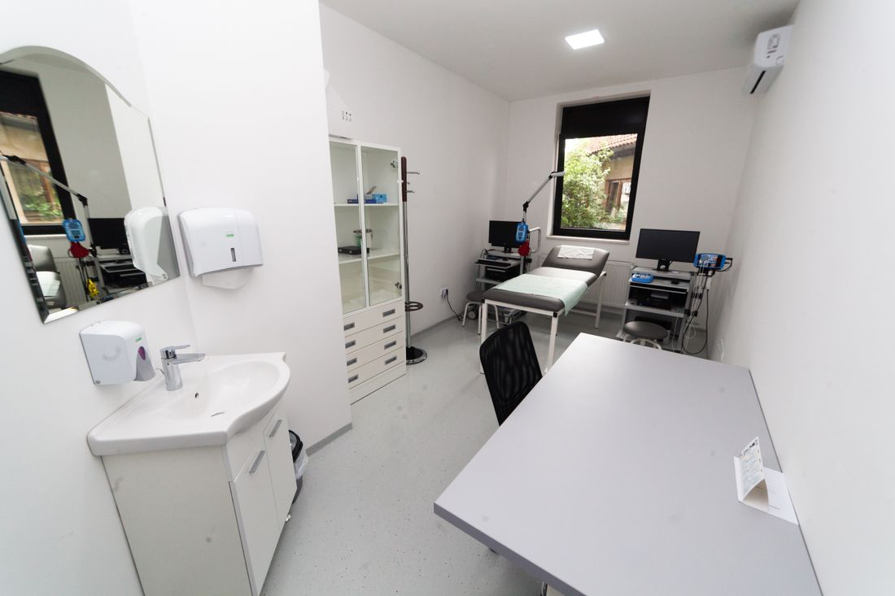

Clareza para
começar uma conversa.
Uma demonstração de como poderia funcionar o contato inicial sobre fisioterapia. Esta página não oferece atendimento e não recebe agendamentos.
Explorar a interface ↗PROFISSIONAL E REGISTRO AINDA NÃO FORNECIDOSUma experiência
calma e compreensível.
Em saúde, clareza é uma exigência. Este estudo evita promessas clínicas, depoimentos e diagnósticos. O usuário vê apenas o tipo de contato que uma clínica verificada poderia oferecer futuramente.

O espaço real
precisa ser verificado.
A foto ilustra um ambiente clínico genérico. Ela não representa consultório, equipamentos ou atendimento do protótipo. Uma página real precisaria de fotografias e informações confirmadas.
Fisioterapia
Área demonstrativa de navegação. Nenhum atendimento é oferecido neste projeto e nenhum profissional foi identificado.
Ver formulário de exemplo ↗Uma interface,
sem agendamento.
Escolha apenas um turno preferido e o tipo geral de contato. Não informe sintomas, diagnóstico ou dados de saúde. O resultado é uma simulação de mensagem, não um pedido recebido.
Protótipo fictício de interface de saúde. Não há clínica, profissional registrado nem agendamento real. Publicação e uso com pacientes bloqueados até identificação e registro profissional verificáveis.
Faltam dados
essenciais.
Este projeto só poderá se tornar um site de clínica após verificação humana de profissional, registro no conselho competente, identificação da clínica, endereço, contato e revisão integral do conteúdo.
Nome e atuação real.
Conselho e número confirmados.
Endereço, contato e fotos próprios.